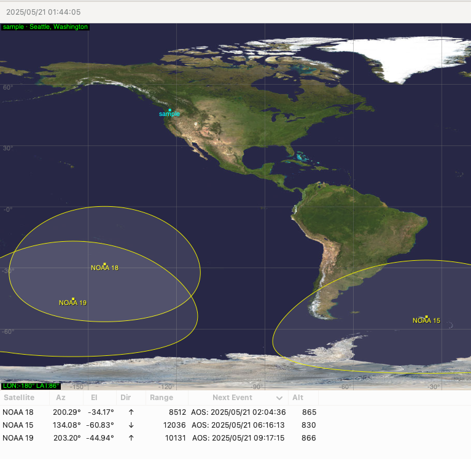
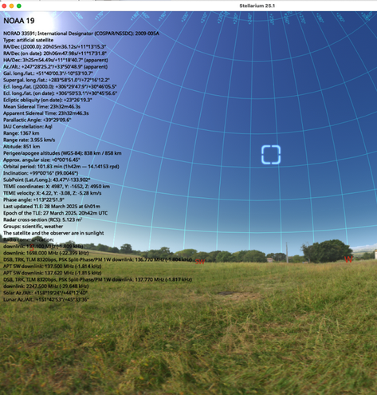
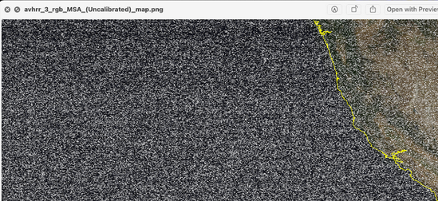

When I found out there was an affordable USB device capable of tuning to a wide range of frequencies allowing me to have a glimpse into the Ham Radio world, which decades ago would have likely cost me thousands and required huge racks of hardware, I knew I had to get my hands on one.
This is possible with SDR (Software Defined Radios). I got the RTL-SDR V3, and my main goal was to try to capture signals from old weather satellites that transmit live images of Earth. After browsing the topic, I knew NOAA (National Oceanic and Atmospheric Administration) should be my first target, since all you need is a dipole antenna, an SDR device, and a computer to get started.
SDR
The RTL-SDR v3
- R828D or R820T tuner chip
- triplexed input filter
The RTL-SDR v4
The new model is less prone to being saturated by strong noise.
Weather Satellites
Weather Satellites like NOAA transmit weather images continuously. As of now, NOAA-15, NOAA-18, and NOAA-19 are the only satellites transmitting images. Keep in mind that the longevity of these transmissions is uncertain, and they may cease entirely in the near future.
They transmit Automatic Picture Transmission (APT) signals in the VHF band (around 137 MHz). The images received are grayscale; however, some software (like SatDump) can process them to add country boundaries and colors based on the location and time of capture.
| Satellite | Frequency |
|---|---|
| NOAA-15 | 137.62 MHz |
Capturing Images
Hardware
- RTL-SDR v3
- Dipole Antenna (60 cm)
- RG174 cable + SMA connectors
Software
- gpredict
- Stellarium
- SDR++
- SatDump
Images
In the image below, we can see a screenshot of the gpredict software, which allows us to view the current position and elevation of satellites, as well as predict their next pass over your location. Based on my experiments, I would target a minimum elevation of 45 degrees to capture a strong signal from NOAA satelittes.

Figure: Screenshot of the predict software used to track NOAA satelittles.
Together with gpredict, you can also use Stellarium to get a 3D view of the satellite’s position and manually estimate when it will pass over your location. In my opinion, they complement each other, but you can plan your next capture using either one.

Figure: Using stellarium to check the position of the NOAA-19 satellite.

Figure: Using SDR++ to capture the signal.

Figure: First attempt capturing signal from NOAA satelittles.
Antenna Design
- ARRL Antenna handbook
- NanoVNA: Low cost vector network analyzer.
Useful Scripts
OGG to WAV
for i in *.ogg; do
ffmpeg -acodec libvorbis -i "$i" -acodec pcm_s16le "${i%.ogg}.wav"
done
Links
Next Steps
[ ] Automatize image capture, processing and upload with raspberry pi [ ] Build PVC QFH Antenna to replace the dipole antenna